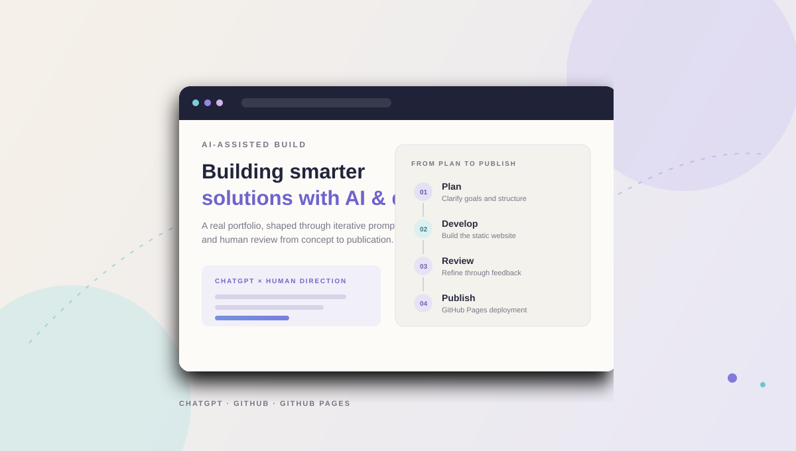

Automated recurring workflows
Built a Python and Jupyter workflow to consolidate six SharePoint QC views into one Excel workbook, with email confirmation and scheduled weekday execution.
AI-DRIVEN ANALYTICS · MUMBAI, INDIA
Pranit Gawade AI · Data Science · Intelligent Automation
Exploring the intersection of artificial intelligence, data science and automation to improve workflows and solve real-world problems.
A DATA-LED POINT OF VIEW
I’m interested in the intersection of data, artificial intelligence and intelligent automation.
With a foundation in Statistics and postgraduate training in Data Science, I enjoy using analytical thinking and Python automation to make complex work clearer and more efficient. I’m continuing to explore machine learning, deep learning and generative AI—and how these technologies can help turn information into useful action.
How I work ↘EXPERIENCE
Applied analytics, Python automation and data quality work across sustainability ratings operations.
Built a Python and Jupyter workflow to consolidate six SharePoint QC views into one Excel workbook, with email confirmation and scheduled weekday execution.
Re-engineered a daily QC extract with Pandas and IVA-to-GICS sector mapping; performed daily ESG checks and reconciliation across 20+ Critical Data Elements.
Automated monthly joiner, mover and leaver comparisons, created QC statistics, investigated discrepancies and tracked issues through Jira.
Managed timelines, deliverables and stakeholder updates for a four-month Sovereign Ratings controls engagement.
TECHNICAL CAPABILITIES
Artificial intelligence, generative AI and practical AI-assisted workflows.
Python and SQL for analysis, data preparation and recurring automation.
Predictive modeling grounded in statistical methods, with deep learning as an area of continued exploration.
Statistical reasoning to explore patterns, test ideas and understand data quality.
Clear visual reporting that helps people find the signal in complex information.
Jupyter Notebook · Azure DevOps · Jira · SharePoint
AI TOOLS
I use AI tools to support problem-solving and analytical workflows while keeping the reasoning and decisions grounded in context.
Used to debug and improve Python scripts, review code changes and support documentation and analysis.
Used alongside Claude to accelerate coding and analytical workflows.
SELECTED PROJECTS
Five projects across analytics, visualization, predictive modeling and AI-assisted development.

01↗AI-ASSISTED DEVELOPMENT · CHATGPT · GITHUB PAGES
Challenge How can AI support a complete digital project, from planning to a public launch?
Used ChatGPT across planning, design iteration and development, then connected GitHub, created the repository and published the site—with human review and approval throughout.
EXPLORATORY DATA ANALYSIS · PYTHON
Question How do per-capita emissions vary across countries, regions and income groups?
High-income countries averaged about 12.5 tonnes per capita; low-income countries averaged under one tonne.
SQL ANALYSIS · IMDb TOP 1000
Approach Used CTEs, subqueries, aggregation and window functions to explore ratings and box office results.
Avengers: Endgame led box office revenue at $2.7B; The Shawshank Redemption led ratings at 9.3.
POWER BI · 130K PASSENGER RECORDS
Approach Built an interactive dashboard with dynamic filtering to compare passenger touchpoints.
Online booking rated 2.8/5; food and drink rated 3.2/5.
PREDICTIVE MODELING · PYTHON
Approach Logistic Regression model using engineered live match-state features.
79% accuracy on match outcome prediction.
EDUCATION & CREDENTIALS
Imarticus Learning · Grade 92.52%
K J Somaiya College of Science and Commerce · CGPA 7.13
Also: HackerRank Software Engineer Intern Certificate
Interested in AI-driven analytics, data science and intelligent automation? I’d be glad to connect.